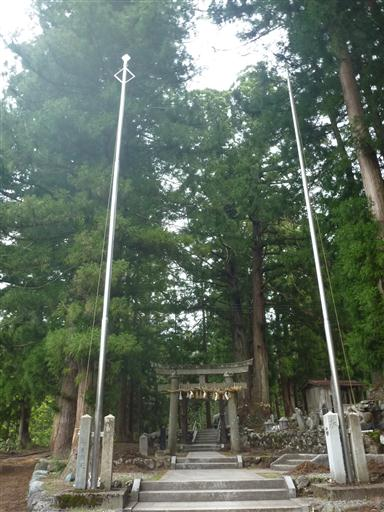
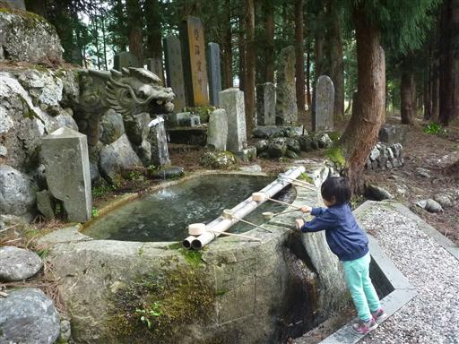
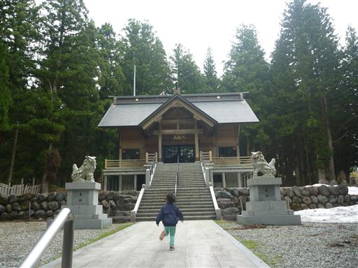
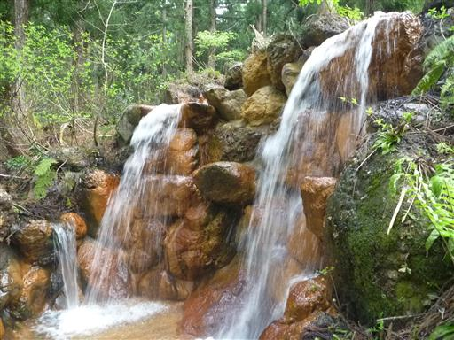
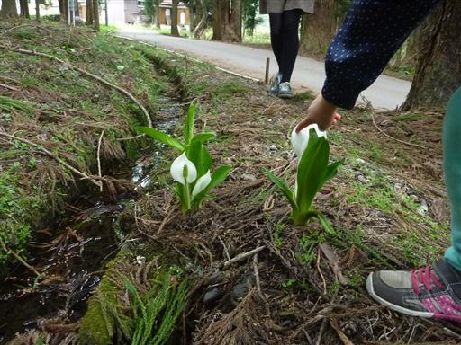
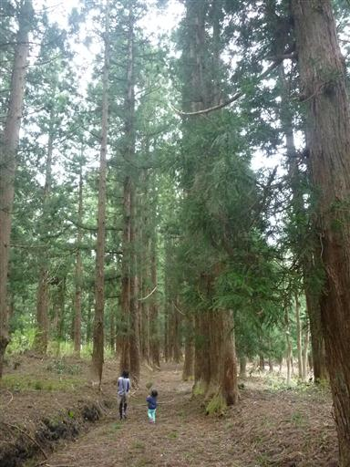
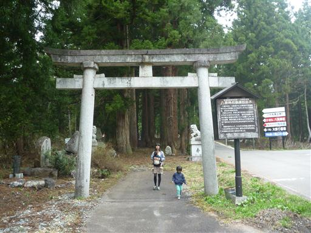
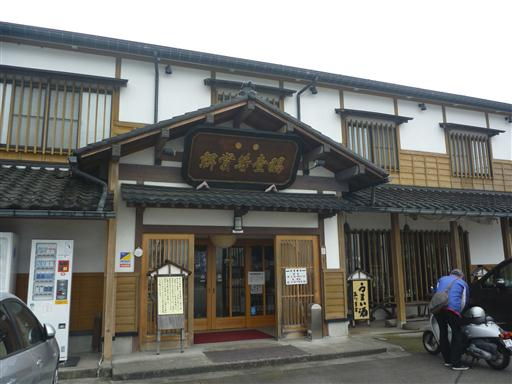
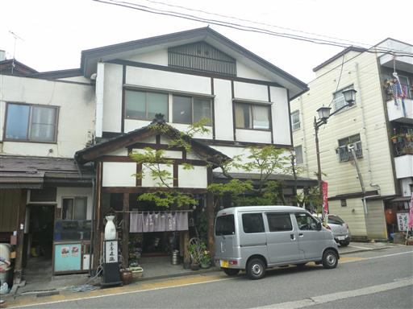

新潟旅行
| 日付 | 2014年5月3日（土） - 2014年5月5日（月） | ||
|---|---|---|---|
| 山域 | 越後 | ||
| メンバー | 家族（妻、長女・3歳、長男・0歳） | ||
| 山行形態 | 子連れ2泊3日ホテル泊 | ||
| アクセス | 車 | ||
| ルート (Map) |
|
3日目
本日は曇り空。再び八海山の麓まで行き、八海神社を訪れる。

手洗い場。龍の口から水が出ているが、遠すぎて届かない…
娘は最近水遊びが好きで、柄杓で水をすくって遊んでいる。

八海神社。歴史のある神社だが建物は比較的新しそうだ。

境内の奥の方に滝がある。石が茶色に変色しているのはなぜだろう？

水が流れている場所にミズバショウの花が咲いている。
自生のミズバショウが咲くのは、北国ではさほど珍しい訳ではないようだ。

ここから杉並木の参道を逆方向に歩いていく。
本来ならば最初の鳥居から逆向きに歩くべきなのだが、
駐車場が神社近辺にあるため仕方がない。

八海神社の入口。
参道は歩く人が少ないのか、木の枝がかなり散乱して荒れていた。

本日は最終日なので観光はここまで。
天気もあまり良くないので、高速道路が混む前に帰宅することにする。
途中で金澤屋酒店に寄って、お土産に日本酒を購入する。

越後湯沢駅の近くにある「森瀧」で昼食をとる。
うどんすきが有名な店だが、舞茸の天ぷらと揚げだし豆腐が特に美味しかった。
昼食をとったら混雑する関越を通って自宅に向かう。
山に一つ登れたし、雪山も少し体験できたしで、楽しい旅行だった。
